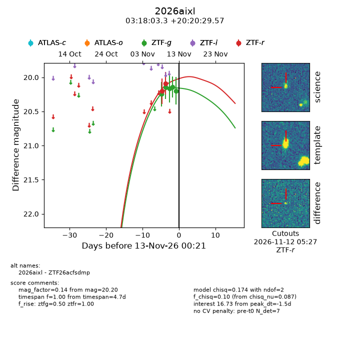
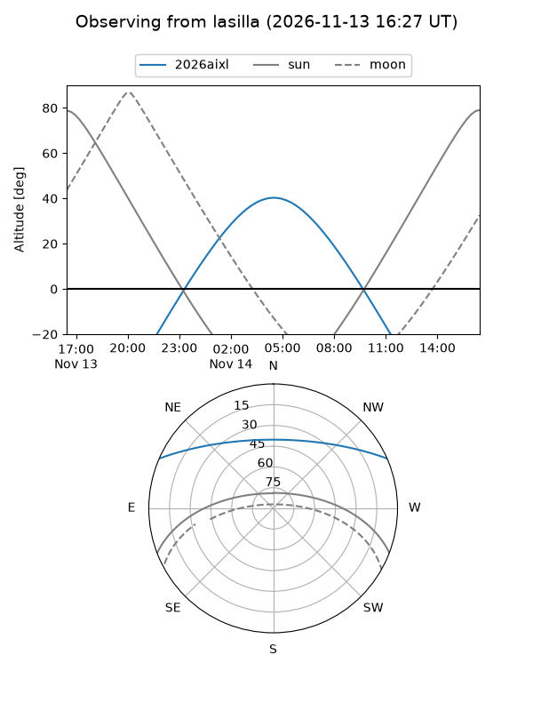
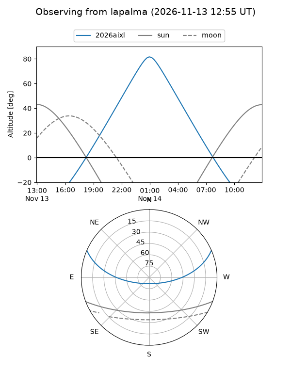
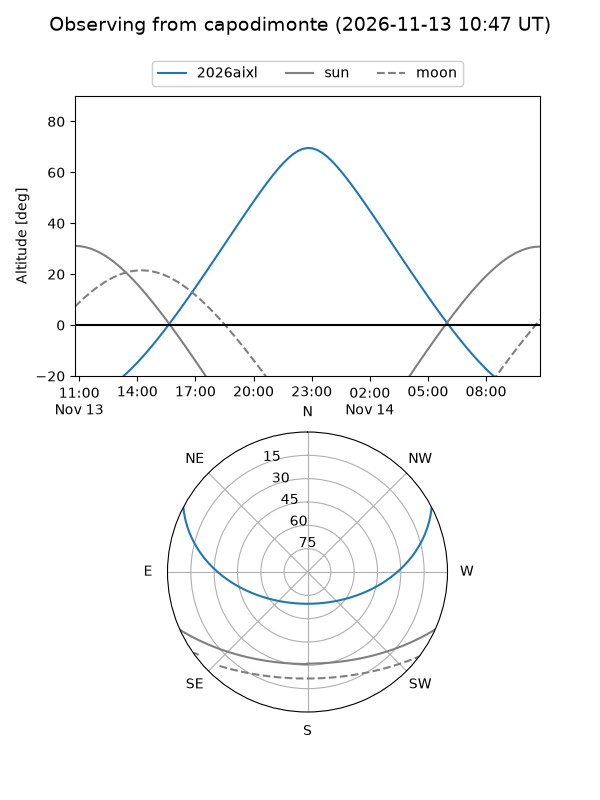
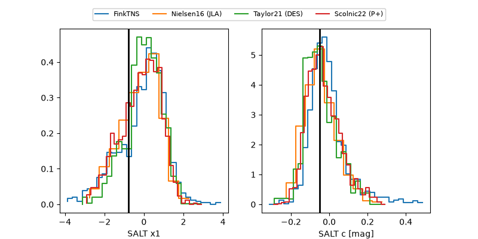

2026aixl
Target 2026aixl at 2026-11-13 00:22
Aliases and brokers:
FINK-ZTF: ztf.fink-portal.org/ZTF26acfsdmp
Lasair-ZTF: lasair-ztf.lsst.ac.uk/objects/ZTF26acfsdmp
ALeRCE-ZTF: alerce.online/object/ZTF26acfsdmp
YSE-PZ: ziggy.ucolick.org/yse/transient_detail/2026aixl
TNS name: wis-tns.org/object/2026aixl
Direct TNS query: direct search
alt names
ZTF26acfsdmp (ztf,fink_ztf)
2026aixl (tns,yse)
Coordinates:
equatorial (ra, dec) = 49.5136,+20.34155
equatorial (HMS+DMS) = 03:18:03.26,+20:20:29.57
galactic (l, b) = (163.5623,-30.72796)
Flags:
peak dt: -1.5
Photometry:
last ztfg=20.20, ztfr=20.09
5 ztfg, 2 ztfr detections
Lightcurve

Visibility



Additional plots
